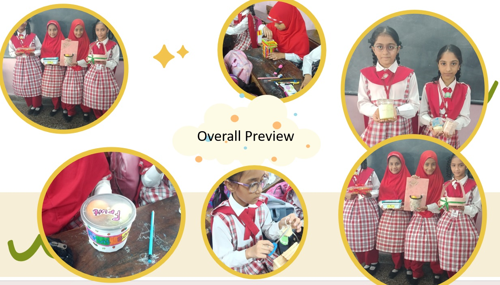
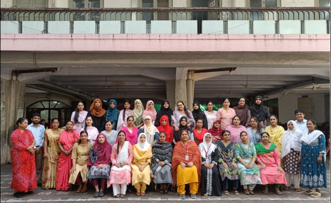

Anjuman-I-Islam's initiative to implement a STEAM laboratory is a visionary step towards nurturing future "imagineers." By integrating Science, Technology, Engineering, Arts, and Mathematics into a cohesive learning environment, the institution is fostering creativity, critical thinking, and problem-solving skills among its students. This hands-on approach in the STEAM laboratory empowers learners to explore the interconnectedness of these disciplines, encouraging innovation and a holistic understanding of the world. Anjuman-I-Islam is not only imparting subject knowledge but also cultivating a mindset that prepares students for the challenges of the modern world, where interdisciplinary skills are essential for success. This forward-thinking approach positions Anjuman-I-Islam as a trailblazer in education, shaping students into well-rounded individuals equipped to tackle the complexities of the 21st century.
 